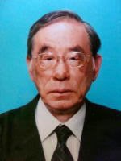
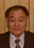

ご挨拶

有限会社三晃化成工業所のHPにようこそお越しくださいました。
弊社は、強化プラスチック(FRP)を駆使することによって、遺跡・遺構・出土品のレプリカ等、様々な製品の製作を行ってきました。美観を伴う製品の開発・手加工を主とした製品開発を得意とし、設計から型貝製作・成形・仕上げまでの一貫作業でお客様のニーズにお応えいたします。また、ライトRTM(画面きれいな)成形の技術を開発し、中量産に対応できる設備を有しております。また、省エネルギー関連の開発と、原料のリサイクル化にも取り組んでおります。
創業以来30余年の伝統や技術の蓄積を活かし、さらに会社に貢献できる会社を目指して、従業員一同努力して参りたいと思います。
どうぞ、今後とも一層のご支援を賜りますようお願い申し上げます。
創業者より

弊社は、強化プラスチック(FRP)を主体として創業し、多品種少量生産に対応できる体質の会社として様々な製品を作ってまいりました。
特装車の部品に始まり、自動車部品の治具、建設機械の部品、食品機械の部品、工作機械部品、船舶部品、遺跡遺構のレプリカ等、お客様のご理解とご協力により順調に前進して参りました。
この創造的な思考に基づき、弊社の若い力が大きく育っております。
色々な製品を通し社会に貢献できる会社として、従業員一同、努力して参りたいと思っております。
会社概要
| 商号 | 有限会社 三晃化成工業所 |
| 所在地 | 本社工場 〒739-0269 広島県東広島市志和町志和掘355番地 TEL:082-434-4132 FAX:082-433-3716 |
| 資本金 | 300万円 |
| 設立 | 平成3年3月26日 |
| 事業内容 | FRP(強化プラスチック)の設計・製作 |
| 役員 | 代表取締役 山本 和夫 取締役 山本 良子 取締役 山本 隆之 取締役 山本 俊朗 |
| 従業員数 | 11名 |
| 主要取引先 | ダイキョーニシカワ株式会社 株式会社前川製作所 株式会社古川製作所 新明和工業株式会社 コベルコ建機株式会社 |
| 工場明細 | 敷地面積 1,857㎡ 建物面積 784㎡ |
| 取引銀行 | 広島銀行高屋支店 もみじ銀行高屋支店 広島信用金庫高屋支店 |
経営理念
モノ作りを通して社会に貢献
創意と技術でお客様に再考の製品とサービスを提供
相互に協力し合い、私たちを取り巻くすべての人々の幸せを目指す
沿革
| 昭和51年10月 | FRPを主体として個人創業 |
| 平成3年3月 | 有限会社三晃化成工業所設立 |
| 平成20年12月 | 株式会社山本製作所に全株式を譲渡し、やまもとグループに入る。 |